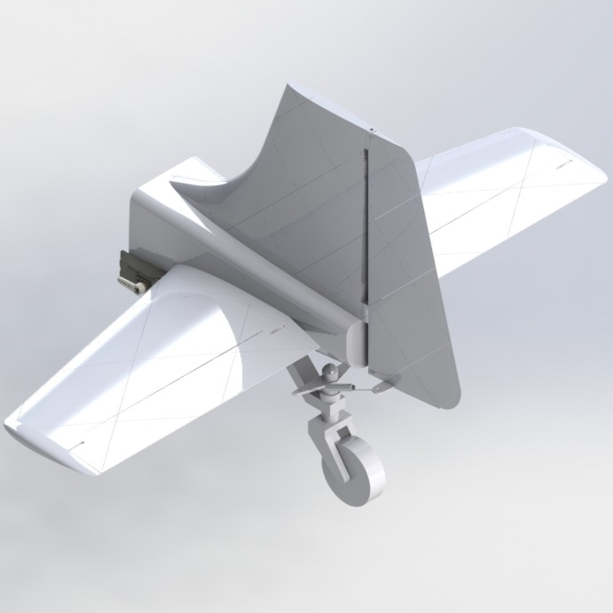
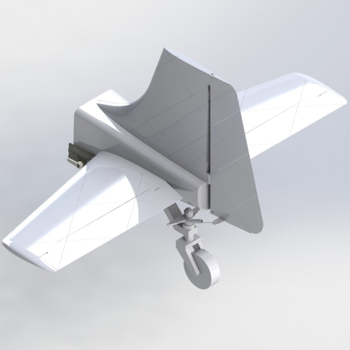
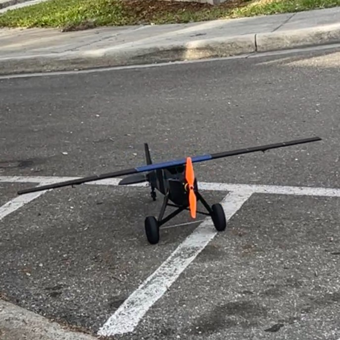
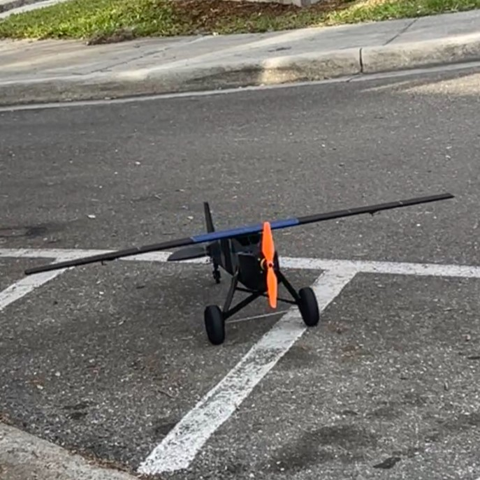

Aircraft Design
Project Overview
The Aircraft Design Project aimed to create a functional radio-controlled aircraft that could fit within specific design constraints. The aircraft had to fit within an 8 ft cube and weigh less than 55 lbs. The primary goal was to ensure the aircraft could complete three laps of an 8900 feet course in under 5 minutes without sustaining significant damage.
Additionally, the aircraft was designed for search and surveillance capabilities, prioritizing stability over speed. The entire design was intended to be 3D printed to allow for quick remanufacture if necessary.
CAD & 3D Modeling
Our CAD and 3D modeling efforts transformed initial concepts into a detailed, high-performance aircraft design. Through iterative refinement, and collaborative problem-solving, we ensured every detail met both structural and aerodynamic requirements.
- Built conceptual models to visualize the complete aircraft structure.
- Iteratively refined designs based on simulation results and peer feedback.
- Maintained strict dimensional accuracy and tolerances.
- Incorporated aerodynamic enhancements for optimal performance.
- Integrated subsystems seamlessly through cross-team collaboration.
- Used advanced CAD tools for structural and aerodynamic simulations.
- Documented every stage from early sketches to final specifications.
Wing Design
The wings were designed using a semi-symmetrical airfoil (NACA 2412), ideal for subsonic flight. The wings featured a trapezoidal shape with a lattice interior structure for increased structural integrity.
Unique integration of an X-shaped lattice, combining ribs and spars into one unified structure. The structure was optimized to minimize weight while also conserving high rigidity. Control surfaces such as ailerons were included, with dimensions and positions optimized for maximum rolling moment and stability.
First and final wing design iteration
Tail Design
The tail configuration chosen was conventional, using a NACA0012 airfoil for the horizontal tail and a NACA0009 airfoil for the vertical tail.
The horizontal and vertical tails were sized for optimal stability and control, with control surfaces (elevator and rudder) designed for effective maneuvering. The design makes use of a tail-wheel-rudder spring mechanism that translates rudder deflection into tail-wheel steering, minimizing the use of electronic components.
Continued use of X-shaped lattice within vertical tail, horizontal tail, and control surfaces.
The decision to choose between an elliptical stabilizer and a trapezoidal stabilizer was crucial, with considerations for aerodynamic efficiency and manufacturing simplicity. As demonstrated in the adjacent images, each design offers unique advantages: the elliptical stabilizer reduces drag and provides smooth lift distribution, while the trapezoidal stabilizer offers cost-effectiveness and structural efficiency.
 

Tail assemblies utilizing an elliptical and a trapezoidal horizontal tail
Fuselage Design
The fuselage served as the central structure, connecting the wings and tail while housing the propulsion system.
Initially designed as a double-walled structure, it was later modified to a single-walled structure to reduce weight.
The fuselage included internal ribs for added structural support and accommodations for servos, servo wires, and attachment points. Additionally, the fuselage served to house the battery, receiver, and electronic speed controllers (ESCs) efficiently.
The design made aerodynamic considerations, which led to the shape of the fuselage minimizing drag and enhancing airflow, contributing to the overall aerodynamic efficiency of the structure.
Engineered to evenly distribute loads during flight to maintain balance and stability.
Front end of fuselage showcasing reinforced nose for housing of propulsion motor, battery, receiver, and ESC.
Final design iteration of the fuselage assembly
Manufacturing Process
Out of my team, I was in charge of the manufacturing process, which involved overseeing the 3D printing of all major components of the aircraft. This approach allowed for precise control over the design and facilitated quick adjustments and remanufacture if needed. Key steps in the manufacturing process included:
3D Printing
- The wing, tail, fuselage, and landing gear components were all 3D printed using optimized settings to balance strength and weight.
- Adjustments to the internal lattice structure of the wings and the fuselage design were made to ensure structural integrity while minimizing weight.
Assembly
- The wing was attached to the fuselage using super glue, with precise alignment ensured through built-in holes and extruded sections.
- The horizontal and vertical tails were similarly attached, with carbon fiber spars initially used for added strength, later replaced by simpler attachment methods.
- The landing gear was assembled and attached, ensuring the correct incidence angle and weight distribution for stable flight.
Testing and Adjustments
- Multiple test flights were conducted to assess the aircraft's performance.
- Adjustments were made to the control surfaces, wing structure, and fuselage design based on test results to optimize flight stability and control.
Failed attempt at using Lightweight PLA
Use of custom printing techniques through Prusa's software
 

First and last completely manufactured RC aircraft
Gallery of manufactured parts and working environment
3D Model of the Aircraft
90-second Pitch Video
Explore my senior design capstone project at the University of Florida, where my team and I specialized in designing an innovative RC airplane. This 90s-style pitch video showcases the comprehensive process, from initial concept and design iterations to the final test flights. Witness the collaborative effort and technical expertise that went into creating a high-performance aircraft, reflecting the challenges and achievements of our course.